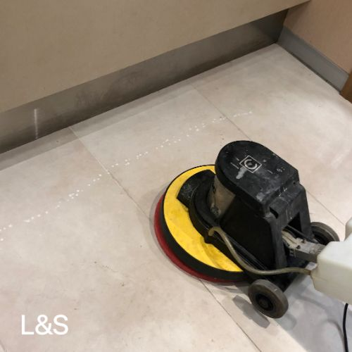
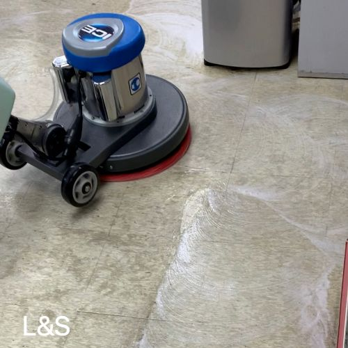
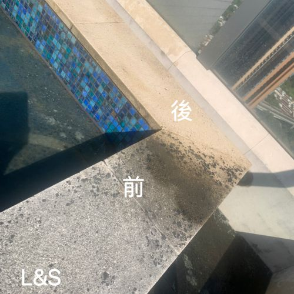
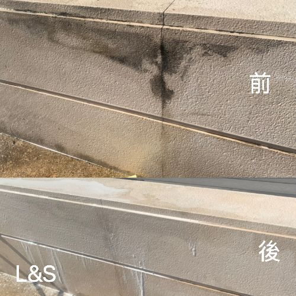

地板每天承受人流踩踏、塵埃積聚、油污滲入，普通拖地根本無法徹底清除。機器洗地利用工業級洗地機配合專業清潔劑，深入地板縫隙及孔隙，全面去除頑固污垢、細菌及異味，令地板煥然一新，同時改善防滑性能，保障使用者安全。
麗雅清潔公司提供香港全面機器洗地服務，服務範圍涵蓋九龍、新界、港島，承接一次性深層清潔及定期清潔合約，歡迎即時WhatsApp查詢報價。




什麼是機器洗地？
機器洗地（Machine Floor Cleaning）是使用電動洗地機（Floor Scrubber）進行地板深層清潔的專業方法。洗地機同時具備噴水、刷洗及吸水功能，能在短時間內清潔大面積地板，效率比人手拖地高出數倍，清潔效果亦更徹底。
根據地板類型及污垢程度，師傅會搭配不同型號的清潔刷盤及清潔劑，確保達到最佳清潔效果，同時不損傷地板表面。
為何選擇機器洗地？ 一部工業級洗地機的清潔效率相當於8至10名工人人手拖地，每小時可清潔面積達800至1,500平方呎，大幅縮短清潔時間，適合大型商業及工業場所。
適用地板類型
機器洗地適用於多種硬地板材質：
- 瓷磚地板——最常見，機器洗地能有效清除縫隙積垢及磚面油污
- 大理石、花崗岩地板——配合專用中性清潔劑，去污同時不傷石材
- 水磨石地板——去除黃漬及污痕，恢復光潔外觀
- PVC / 膠地板——清除油污及污垢，可同時進行上蠟保護
- 水泥 / 環氧樹脂地板——工廠及停車場常見，去除油污及重型污垢
- 木紋磚——使用低水壓設置，安全有效清潔
機器洗地服務內容
標準機器洗地
- 清除地板表面灰塵、泥沙
- 機器配合清潔劑深層刷洗
- 吸走污水，保持地板乾爽
- 角落及邊位人手補洗
深層清潔加強版
- 以上標準流程全部包含
- 重油污或頑固污漬特效處理
- 地板縫隙專用清潔劑浸透
- 去除地板黃化、水漬及鹼性沉積
洗地 + 打蠟 / 拋光
- 深層清潔後上蠟保護層
- 地板拋光令表面光亮如新
- 延長地板使用壽命
- 減少日後清潔難度
服務適用場所
| 場所類型 | 常見需求 | 建議頻率 |
|---|---|---|
| 辦公室 | 定期清潔、裝修後清潔 | 每月至每季一次 |
| 商場 / 零售店 | 人流多、易積油污 | 每週至每月一次 |
| 餐廳 / 食肆 | 廚房油污、大廳污漬 | 每週一次 |
| 工廠 / 倉庫 | 機油、工業污垢 | 每月至每季一次 |
| 停車場 | 輪胎印、機油污漬 | 每季一次 |
| 住宅大堂 | 瓷磚 / 大理石清潔 | 每月至每季一次 |
| 學校 / 幼稚園 | 衛生要求高、大面積 | 假期大清潔 |
機器洗地工作流程
- 現場評估——師傅上門評估地板類型、面積及污垢程度，確認最適合的清潔方案
- 預備工作——移開可移動傢俱、保護固定設備及插座
- 乾掃除塵——先用吸塵機或乾掃工具清除表面灰塵、沙粒
- 預處理頑污——針對重油污、污漬噴塗專效清潔劑預先浸透
- 機器洗地——洗地機系統性覆蓋全場，刷洗並即時吸走污水
- 角落補洗——人手清潔機器觸及不到的角落及邊位
- 潤飾處理——如有需要進行打蠟或拋光
- 完工驗收——師傅與客戶一同確認清潔效果，確保滿意
收費參考
洗地服務收費按地板面積及污垢程度而定，以下為一般參考：
| 服務項目 | 適用面積 | 參考收費 |
|---|---|---|
| 標準機器洗地 | 500平方呎以下 | $800起 |
| 標準機器洗地 | 500–1,500平方呎 | $1,200起 |
| 深層清潔加強 | 按面積另計 | 另加$300–$600 |
| 洗地 + 打蠟 | 按面積另計 | 另加$500起 |
| 定期合約 | 任何面積 | 享折扣優惠 |
以上為參考價格，實際報價視乎地板狀況、污垢類型及場地佈局而定。請WhatsApp 59186741索取免費上門報價。
定期合約優惠：簽訂每月或每季定期洗地合約，可享8折優惠，並優先安排師傅時間，適合商場、餐廳、辦公室等有持續清潔需求的客戶。
為何選擇麗雅清潔？
- 十年以上清潔經驗——服務過香港數百個商業及住宅客戶
- 工業級專業器材——使用進口工業洗地機，效果遠優於家用設備
- 資深師傅上門——因應不同地板材質調整清潔方案，安全不傷地板
- 彈性預約時間——包括週末、假日及非辦公時間，配合客戶業務需要
- 透明報價——清晰列明收費，無隱藏費用
- 保險保障——公司備有第三者責任保險，客戶財物受保障
常見問題 FAQ
Q：機器洗地與普通拖地有何分別？
普通拖地只能清除表面灰塵，而機器洗地使用工業級洗地機配合專業清潔劑，能深入地板縫隙去除頑固污垢、油漬及細菌，清潔效果遠勝人手拖地，同時節省人力及時間。
Q：洗地後多久地板才能使用？
一般機器洗地完成後，地板約需30至60分鐘乾燥即可正常使用。如同時進行打蠟或拋光處理，則需要1至2小時。我們師傅完工後會告知具體等候時間。
Q：哪些類型地板適合機器洗地？
機器洗地適用於大理石、瓷磚、水磨石、PVC地板、木紋磚、水泥地板等各類硬地板。木地板及竹地板建議使用低水分乾洗方式，我們師傅會因應地板材質選用適合的清潔方法。
Q：機器洗地收費如何計算？
收費按地板面積（平方呎）及污垢程度計算，一般辦公室地板清潔起價約$800起。如需同時打蠟或拋光則另計。請WhatsApp 59186741查詢即時報價。
Q：可以在非辦公時間上門洗地嗎？
可以。我們提供彈性預約，包括週末及公眾假期，亦可配合客戶要求在晚上或清晨非辦公時間進行，不影響日常業務運作。
Q：需要自行提供清潔用品嗎？
不需要。我們師傅上門時會攜帶所有專業清潔器材及用品，客戶毋須準備任何東西。